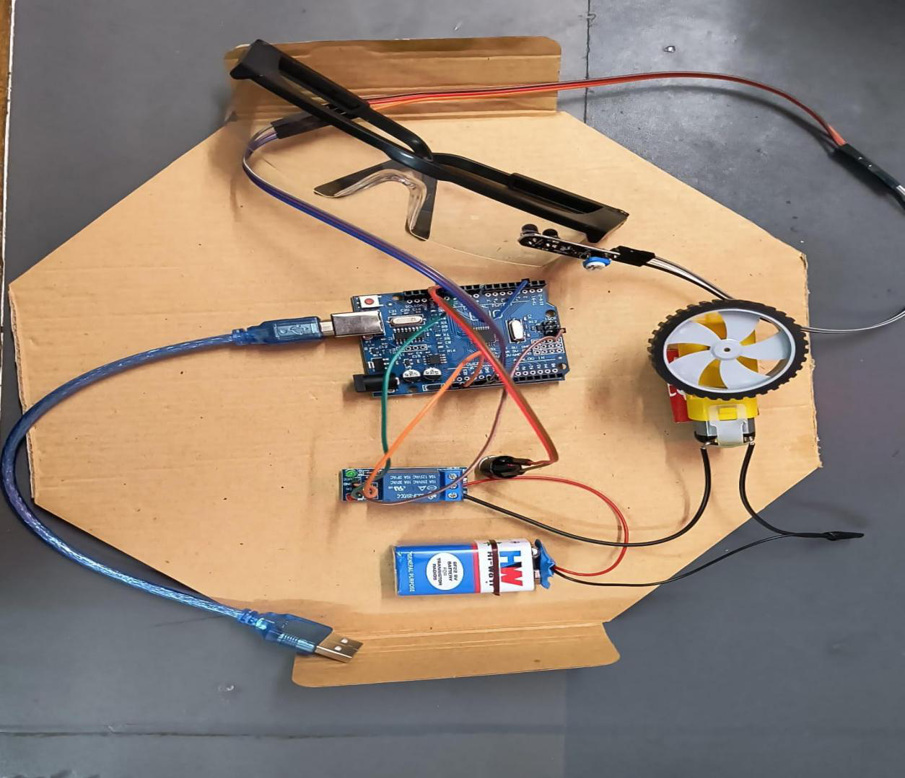
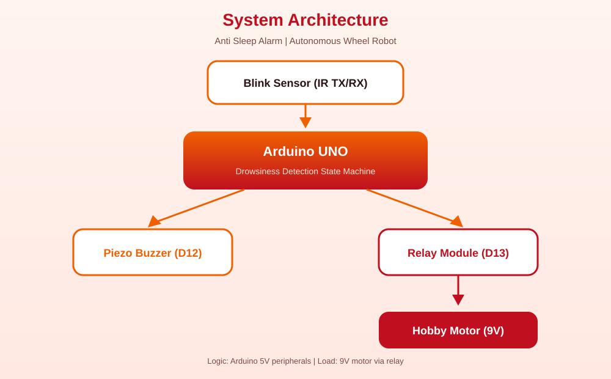
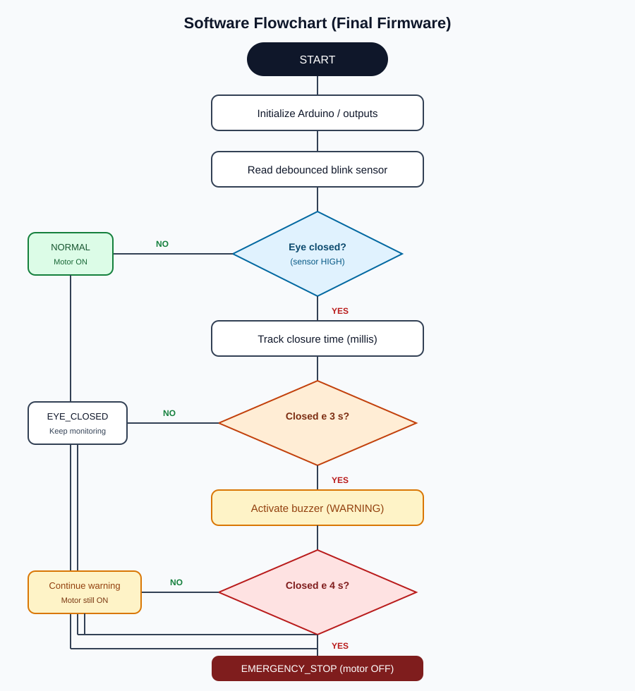

Overview
This project is a low-voltage academic prototype demonstrating drowsiness-response logic for an autonomous wheel robot. It is not a certified automotive safety product.

System Architecture

Detection Logic
- Normal: Eye open / normal blinking → motor ON, buzzer OFF
- Warning (≥ 3 s closed): buzzer ON, motor still ON
- Emergency (≥ 4 s closed): relay stops motor, buzzer remains ON
- Recovery: blinking resumes → system resets
Hardware
| Component | Purpose |
|---|---|
| Arduino UNO | Embedded controller |
| IR blink sensor | Eye open/closed sensing |
| Piezo buzzer | Audible warning |
| Relay module | Motor load switching |
| Hobby motor + 9V | Motion / stop demonstration |
Wiring Snapshot
| Device | Arduino |
|---|---|
| Blink sensor OUT | D2 |
| Piezo buzzer | D12 |
| Relay IN | D13 |

Flowchart

Demo Videos
Links from the original documentation (Google Drive permission may be required):
Safety Notes
- Prototype only — not certified for real vehicles
- Do not connect to a real vehicle braking system
- Use a low-voltage hobby motor for demonstration
- Motor current must pass through the relay/battery circuit, not an Arduino GPIO
Contribution
Ankit Biswas · Student ID 22052533 · CSE-3
Primary documented contribution: research, technical writing, editing/formatting, visuals, and review/revision of project documentation.